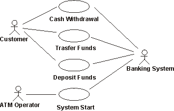

| Guideline: Specifying Work Profiles and Performance Measurements |
 |
|
| Related Elements |
|---|
OverviewSoftware quality is assessed along different dimensions, including reliability, function, and performance. You have to identify and define the different variables that affect or influence an application or system's performance and the measures required to assess performance. The workload profiles represent candidates for conditions to be simulated against the Target Test Items under one or more Test Environment Configurations. Different roles in the organization need this kind of information for different purposes:
The captured information focuses on characteristics and attributes in the following primary areas:
Tests should be considered to measure and evaluate the characteristics and behaviors of the target-of-test when functioning under different workloads. Successfully designing, implementing, and executing these tests requires identifying both realistic and exceptional data for these workload profiles. Use Cases and Use Case AttributesTwo aspects of use cases are considered for selection of scenarios for this type of testing:
Critical Use CasesNot all use-case scenarios being implemented in the target-of-test may be needed for these tests. Critical use cases contain those use-case scenarios that will be the focus of the test - that is their behaviors will be measured and evaluated. To identify the critical use cases, identify those use-case scenarios that meet one or more of the following criteria:
List the critical use-case scanners for inclusion in the test. As theses are being identified, the use case flow of events should be reviewed. Begin to identify the specific sequence of events between the actor (type) and system when the use-case scenario is executed. Additionally, identify (or verify) the following information:
Significant Use CasesUnlike critical use-case scenarios, which are the primary focus of the test, significant use-case scenarios are those that may impact the performance behaviors of critical use-case scenarios. Significant use-case scenarios include those that meet one or more of the following criteria:
As the significant use-case scenarios are being identified and listed, review the use case flow of events and additional information as done above for the critical use-case scenarios. Actors and Actor AttributesSuccessful performance tests requires identifying not just the actors executing the critical and significant use-case scenarios, but must also simulate / emulate actor behavior. That is, one instance of an actor may interact with the target-of-test differently (take longer to respond to prompts, enter different data values, etc.) while executing the same use-case scenario as another instance of that actor. Consider the simple use cases below:  Actors and use cases in an ATM machine. The first instance of the "Customer" actor executing a use-case scenario might be an experienced ATM user, while another instance of the "Customer" actor may be inexperienced at ATM use. The experienced Customer quickly navigates through the ATM user-interface and spends little time reading each prompt, instead, pressing the buttons by rote. The inexperienced Customer however, reads each prompt and takes extra time to interpret the information before responding. Realistic workload profiles reflect this difference to ensure accurate assessment of the behaviors of the target-of-test. Begin by identifying the actors for each use-case scenario identified above. Then identify the different actor profiles that may execute each use-case scenario. In the ATM example above, we may have the following actor stereotypes:
For each actor profile, identify the different attributes and their values such as:
Additionally, for each actor profile identify their workload profile, specifying all the use-case scenarios they execute, and the percentage of time or proportion of effort spent by the actor executing these scenarios. Identifying this information is used in identifying and creating a realistic load (see Load and Load Attributes below). System Attributes and VariablesThe specific attributes and variables of the Test Environment Configuration that uniquely identify the environment must also be identified, as these attributes also impact the measurement and evaluation of behavior. These attributes include:
Identify and list the system attributes and variables that are to be considered for inclusion in the tests. This information may be obtained from several sources, including: Vision or Software Architecture documents, or Stakeholder requests. Workload ProfilesAs stated previously, workload is an important factor that impacts the behavior of a target-of-test. Accurately identifying the workload profile that will be used to evaluate the targets behavior is critical. Typically, test that involve workload are executed several times using different workload profiles, each representing a variation of the attributes described below:
For each workload profile used to evaluate the performance of the target-of-test, identify the values for each of the above variables. The values used for each variable in the different loads may be derived by observing or interviewing actors or, from the Business Use-Case Model if one is available. It is common for one or more of the following workload profiles to be defined:
When workload testing includes Stress Testing, several additional loads should be identified, each targeting specific aspects of the system in abnormal or unexpected states beyond the expected normal capacity of the deployed system. Performance Measurements and CriteriaSuccessful workload testing can only be achieved if the tests are measured and the workload behaviors evaluated. In identifying workload measurements and criteria, the following factors should be considered:
Performance MeasurementsThere are many different measurements that can be made during test execution. Identify the significant measurements to be made and justify why they are the most significant measurements. Listed below are the more common performance behaviors monitored or captured:
Critical Performance Measurement PointsIn the Use Cases and Use Case Attributes section above, it was noted that not all use cases and their scenarios are executed for performance testing. Similarly, not all performance measures are made for each executed use-case scenario. Typically only specific use-case scenarios are targeted for measurement, or there may be a specific sequence of events within a specific use-case scenario that will be measured to assess the performance behavior. Care should be taken to select the most significant starting and ending "points" for the measuring the performance behaviors. The most significant ones are typically those the most visible sequences of events or those that we can affect directly through changes to the software or hardware. For example, in the ATM - Cash Withdraw use case identified above, we may measure the performance characteristics of the entire use-case instance, from the point where the Actor initiates the withdrawal, to the point in which the use case is terminated - that is, the Actor receives their bank card and the ATM is now ready to accept another card, as shown by the black "Total Elapsed Time" line in the diagram below:
Notice, however, there are many sequences of events that contribute to the total elapsed time, some that we may have control over (such as read card information, verify card type, initiate communication with bank system, etc., items B, D, and E above), but other sequences, we have not control over (such as the actor entering their PIN or reading the prompts before entering their withdrawal amount, items A, C, and F). In the above example, in addition to measuring the total elapsed time, we would measure the response times for sequences B, D, and E, since these events are the most visible response times to the actor (and we may affect them via the software / hardware for deployment). Performance Measurement CriteriaOnce the critical performance measures and measurement points have been identified, review the performance criteria. Performance criteria are usually stated in Supplemental Specifications. If necessary revise the criteria. Here are some criteria that are often used for performance measurement:
On-line response time, measured in seconds, or transaction throughput rate, measured by the number of transactions (or messages) processed is the main criteria. For example, using the Cash Withdraw use case, the criteria is stated as "events B, D, and E (see diagram above) must each occur in under 3 seconds (for a combined total of 9 seconds)". If during testing, we note that that any one of the events identified as B, D, or E takes longer than the stated 3 second criteria, we would note a failure. Percentile measurements are combined with the response times and / or throughput rates and are used to "statistically ignore" measurements that are outside of the stated criteria. For example, the performance criteria for the use case was now states "for the 90th percentile, events B, D, and E must each occur in under 3 seconds ...". During test execution, if we measure 90 percent of all performance measurements occur within the stated criteria, no failures are noted. |

| © Copyright IBM Corp. 1987, 2012 All Rights Reserved Property of IBM These materials are intended only for use as part of an IBM engagement |